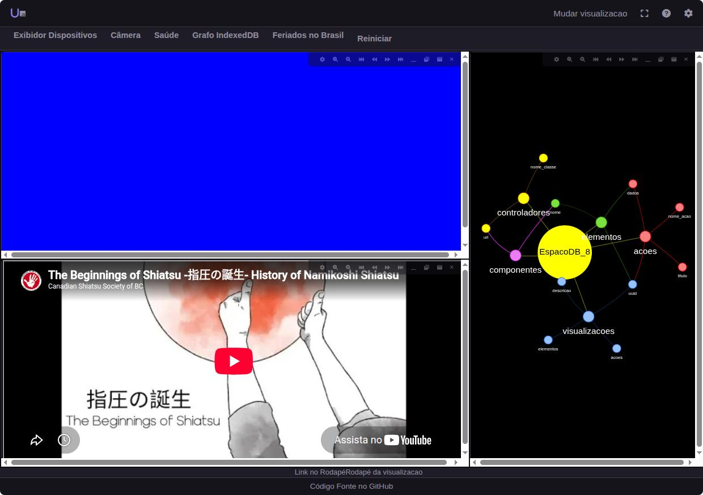

Examples
Two real examples from the repository — a small form that exercises the whole DSL at once, and the full application the project has used as its proving ground from the start.
Form with nested components
In src/html/componentes/z.example/: a
br-test component with every kind of binding — text, checkbox, a
three-branch conditional chain, and a keyed list of addresses, where each item is itself
another reactive component (br-address) receiving data via
data-bind.
<template data-if="show_address">
<div id="addresses">
<template data-for="address, index in addresses : zip">
<br-address data-bind='{"data-state":"address"}'></br-address>
</template>
</div>
</template>Workspace — the reference application
Ultima started in 2020 as a treemap visualization prototype, and the "Workspace" is still the application that validates the framework in practice: an environment where you add elements — videos, images, iframes, graphs, data panels — and arrange them in one of two switchable views, with all state persisted in the browser via IndexedDB. No backend.

The Workspace in action: three elements (touch, video, a graph of its own local database) automatically arranged by the treemap layout.
The second view arranges the same elements in floating, draggable, resizable windows — switching between the two is a menu action, with no data lost.